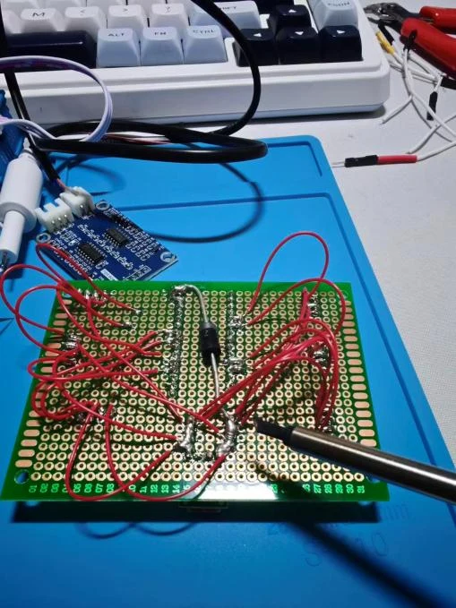
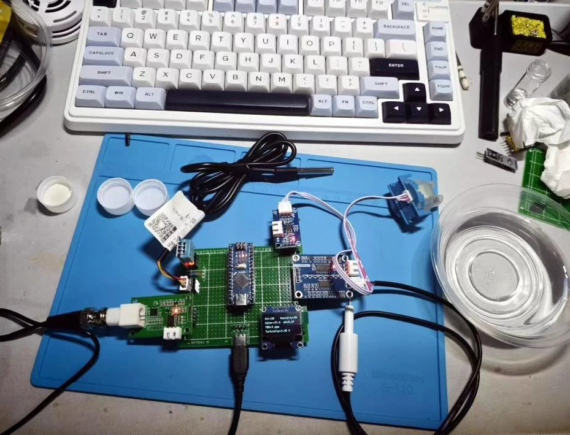
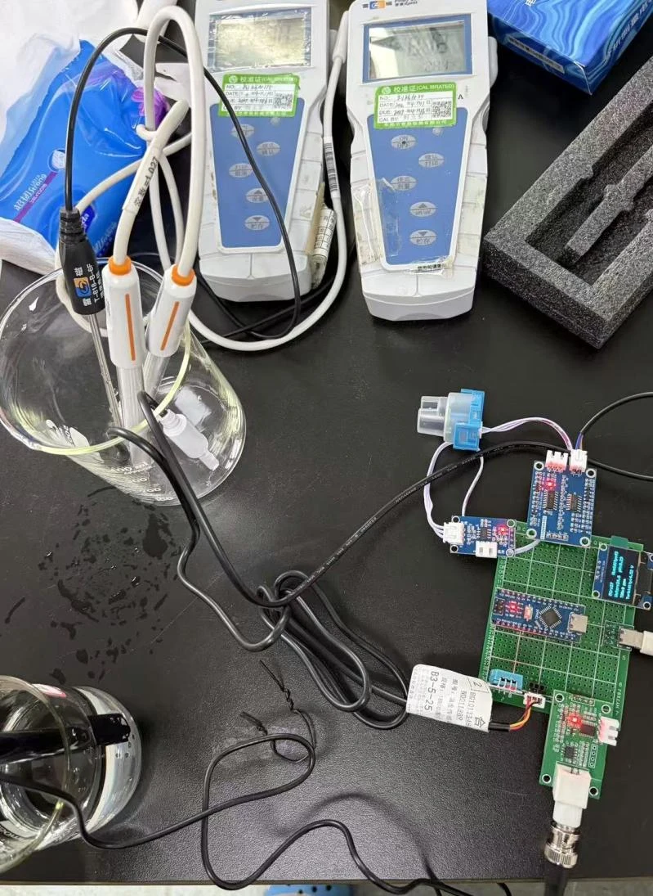

1,400 ppm
is a boundary.
The low-cost TDS channel reaches a display limit of 1,400 ppm. Lemon water measured 5,080 ppm in the lab, so its prototype result is a lower bound, not an exact concentration.
STUDENT RESEARCH · SRH UNIVERSITY
Making water and soil measurements more accessible, one circuit at a time.
Two low-cost systems. Built by hand. Tested against laboratory instruments. A journey from the first prototype to the final measurement.
Environmental sensing becomes easier to understand when you can build the instrument yourself.
This project developed two compact systems for hands-on measurement: one for water, one for soil. Each combines a Nano-compatible controller, soldered perfboard and an OLED display, so measurements can be read directly at the sample.
The work goes beyond getting a number on a screen. It follows the whole process: integrating sensors, checking communication, calibrating pH, and comparing the results with laboratory readings.
Read the final research reportDevelopment of Low-Cost
Water & Soil Sensor Systems
Two purpose-built instruments, with the original construction photographs and wiring diagrams.
AQUA / FINAL SEPTEMBER BUILD
Digital, serial and analogue sensors feed a single local display. USB provides power, programming and serial diagnostics.
FOLLOW THE SIGNAL
The final water system uses a serial pH module. The RS485 four-in-one probe belongs to the soil system.
Download original diagram ↓THE DEVELOPMENT NOTEBOOK
The proposal began with practical water and soil sensing. Arduino Uno prototypes used serial-monitor output. The water setup combined DHT22, DS18B20, pH and TDS modules; the soil setup used separate sensors and prepared soil-water extracts.
Eight water sample types and three soil types were recorded in the milestone work. Reanalysis found mean differences in water and air temperature, helping define what the final rebuild needed to improve. The proposed cigarette-butt-water study remains an early research idea, not a reported final experiment.
Explore the original milestone slides ↓
Both final systems were rebuilt with Nano-compatible ATmega328P controllers and soldered perfboard. A 0.96-inch SSD1306 OLED was added to each instrument.
The soil setup became a single SN-3001-TR four-in-one RS485 probe with a TTL-RS485 converter. The water system gained an optical turbidity voltage channel. Plugging in USB power is enough to read the screens.

The pH electrode was calibrated using buffers at pH 4.00, 6.86 and 9.18, with rinsing between solutions. Firmware checks communication frames and displays measurements locally.
Soil messages use Modbus RTU and CRC-16. The water TDS routine uses a 30-sample median filter and water-temperature compensation. The original programmes are available below for inspection.
Read the firmware ↓
The final comparison used six water samples and three soil samples. Water tests were recorded on 10 September 2026, at approximately 27 °C and 45% ambient relative humidity.
The September report documents the construction, results, limitations and full programmes. The final poster summarises the results.
Browse the project archive ↓Historical costs from the September 2026 report. Euro amounts use the report's conversion of CNY 7.7900 per euro; these are not current retail prices.
| Component | Quantity | CNY | EUR, approx. |
|---|---|---|---|
| Core hardware — both systems | 361.91 | 46.46 | |
| With buffers, solder and connectors | 407.86 | 52.36 | |
Explore the final comparison dataset. Every value comes from the project report. This is recorded research data, not a live sensor feed.
Screen-style replay of recorded values.
No hardware is connected to this website.
SYSTEM VS LABORATORY
The sample set is small. A p-value above 0.05 means the paired test did not detect a significant mean difference; it does not establish equivalence or accuracy across other conditions. TDS statistics reproduce the report's five-pair analysis, including the salt-water reading at the display limit.
The low-cost TDS channel reaches a display limit of 1,400 ppm. Lemon water measured 5,080 ppm in the lab, so its prototype result is a lower bound, not an exact concentration.
The optical channel is reported in volts. A validated voltage-to-NTU calibration is still needed before it can report turbidity in NTU.
Explore the Arduino firmware for the water and soil systems.
Loading original firmware…FROM THE PROJECT CAMERA
Original photographs from the final report.
From the first proposal to the final presentation. Browse the reports, posters, slides, firmware and datasets.
THE FINAL RESEARCH REPORT
23 pages covering the hardware, construction, calibration, measurements, statistical comparisons and both complete Arduino programmes.
Read the report Download PDF ↓Keep the whole project together.Project documents, firmware, measurements and wiring diagrams.
Download complete archive ↓GUILONG XIANG
This project brings together practical electronics and environmental measurement as part of my work in Water Technology at SRH University.
The next steps are clear: improve the TDS range, calibrate the optical channel, and test more samples over longer periods. The project is a starting point for better instruments and better questions.
Explore my project work